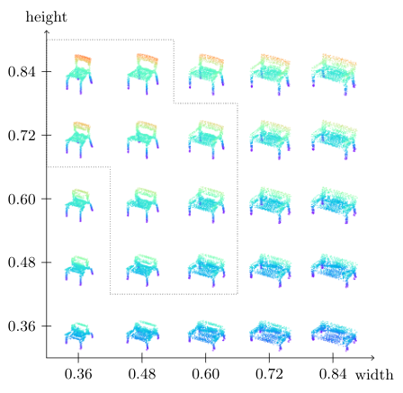

| Larissa T. Triess1,2 | Andre Bühler1,3 | David Peter1 | Fabian B. Flohr1,3 | J. Marius Zöllner2,4 |
| 1Mercedes-Benz AG |
2Karlsruhe Institute of Technology |
3University of Stuttgart |
4Research Center for Information Technology |
| In 2022 International Conference on Artificial Intelligence and Statistics (AISTATS) |
| [Paper] |
|  |
|
Proposed Approach: Our method can generate a diverse set of object shapes and be conditioned on object dimensions (values on the axes). The figure shows objects generated from the same latent vector z, but with different continuous conditioning parameters y. The generated objects are realistic and semantically meaningful. Our method generalizes to out-of-distribution dimensions (outside of dotted shape). |
| Generative models can be used to synthesize 3D objects of high quality and diversity. However, there is typically no control over the properties of the generated object. This paper proposes a novel GAN setup that generates 3D point cloud shapes conditioned on a continuous parameter. In an exemplary application, we use this to guide the generative process to create a 3D object with a custom-fit shape. We formulate this generation process in a multi-task setting by using the concept of auxiliary classifier GANs. Further, we propose to sample the generator label input for training from a KDE of the dataset. Our ablations show that this leads to significant performance increase in regions with few samples. Extensive quantitative and qualitative experiments show that we gain explicit control over the object dimensions while maintaining good generation quality and diversity. |
@inproceedings{triess2022aistats,
title = {
Point Cloud Generation with Continuous Conditioning
},
author = {
Larissa T. Triess and Andre B\"uhler and David Peter and Fabian B. Flohr and J. Marius Z\"ollner
},
booktitle = {Proc. of the International Conference on Artificial Intelligence and Statistics (AISTATS)},
year = {2022},
}
|
| Odena, A., Olah, C., an Shlens, J. (2017). Conditional Image Synthesis with Auxiliary Classifier GANs. In Proceedings of the International Conference on Machine Learning. |
{kind=link}